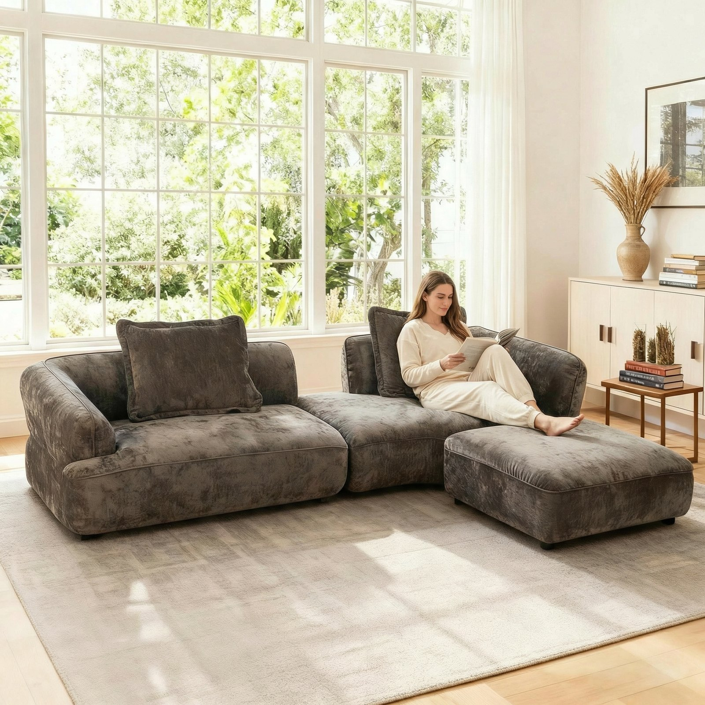
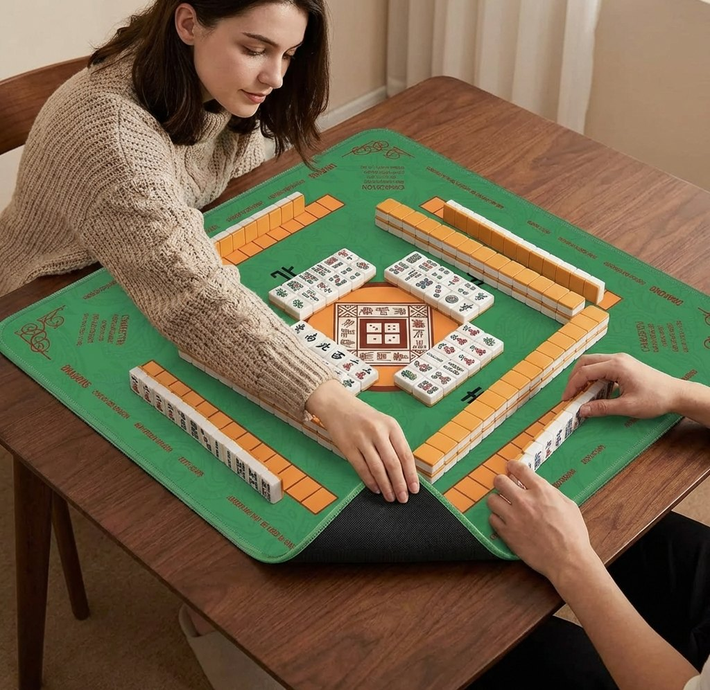
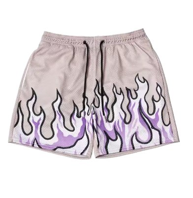
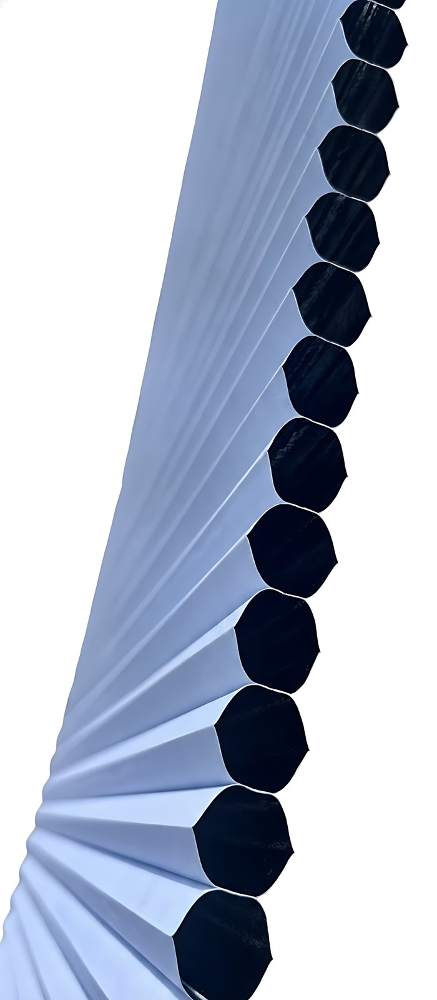
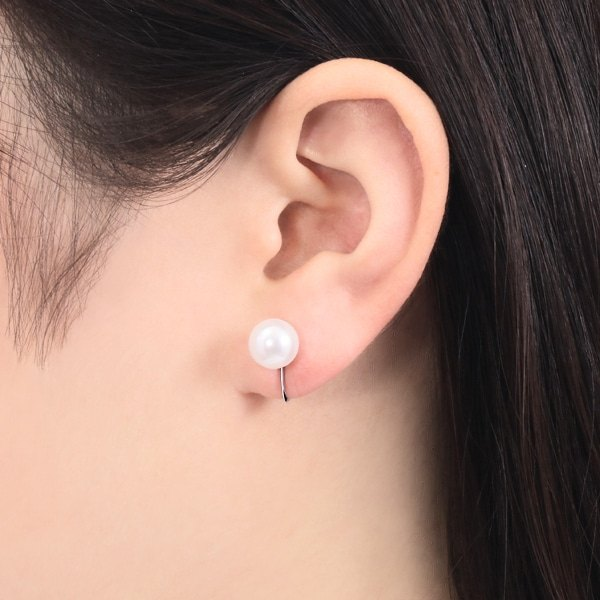
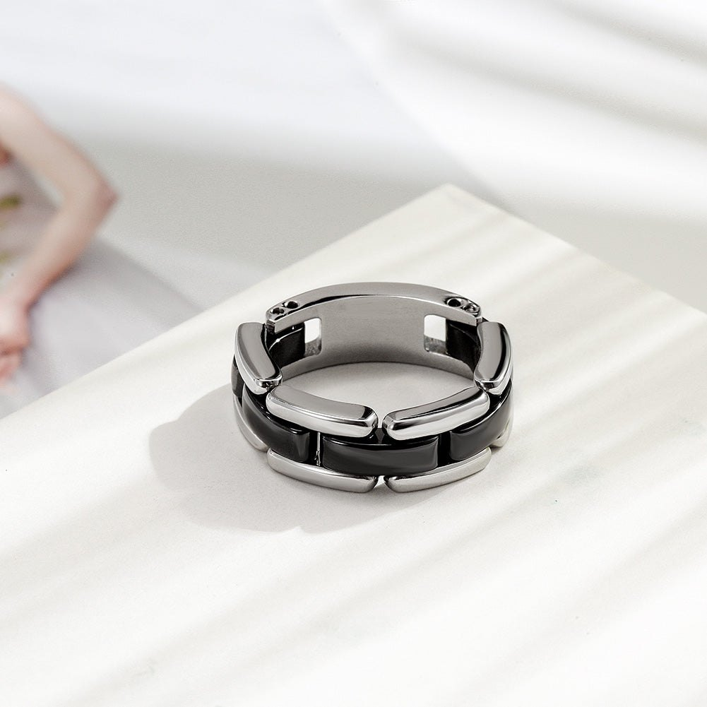
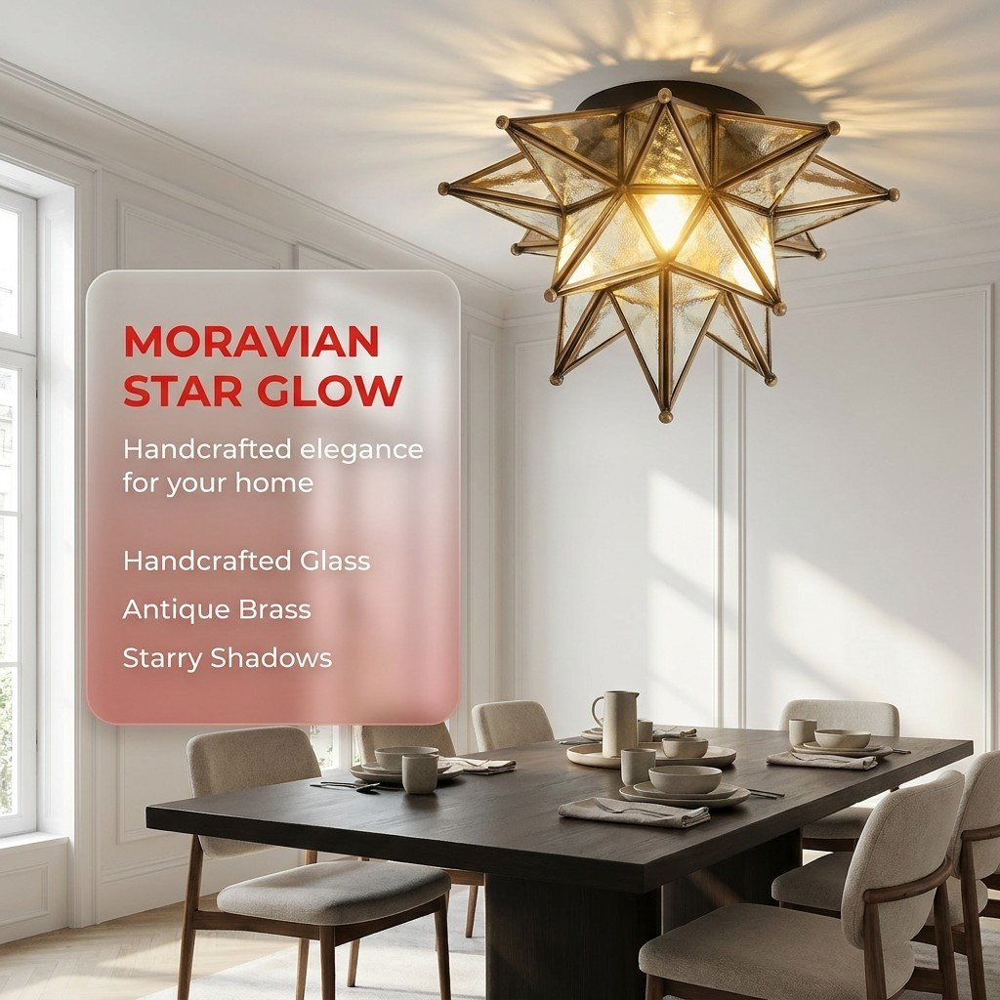

AI 生图 · 作品与质检档案
上段实习在某跨境 AI 视觉平台负责生图质量与 Prompt 体系：建立评测标准、定位系统性缺陷、 重构提示词架构，并把每一次结论落到可复查的数字与留痕上。 下面先放作品，再放方法与案例。
多品类、多场景、多比例批量出图；同款商品能出整套图，不是单张碰运气。
把"好不好看"拆成可打分的维度（受众 / 商品保真 / 画面质量），能用同一把尺子复评。
提示词与版本号全程记录，问题图建台账、可追溯可排除——对应合规审核与授权台账的要求。
作品
覆盖家居布艺、服饰、首饰、静物与营销排版。品类以服饰与首饰为主， 其中首饰与静物的微距、高光、肤感控制可直接迁移到美妆个护与保健品的质感表达。







说明：以上为能力方向示意，非全部商业交付；商业项目图因保密未全部公开，可在面试时按要求展示。 美妆个护 / 保健品品类我目前没有商业作品，可按贵司品牌调性在一周内补 3–5 张图 + 1 条图生视频 demo。
方法与案例
这部分是"图为什么能稳定"的证明。每份案宗只保留结论与关键数字，过程记录可另行提供。
客户要北美白人模特，系统却大量产出东亚面孔，广告素材在欧美市场直接用不了。
交叉比对期望人种与实际生成结果，388 个样本中 112 例偏移（28.9%），其中"白人→东亚"占 72%。 下钻后锁定：提示词注入环节只传了中文商品描述，没有传目标市场与人种字段—— 模型看到中文商品名就推断东亚市场。是链路缺陷，不是模型不可控。
(East Asian:1.5)
这类加权"锁定错误答案"，偏移率反升到 33.8%（三版最高）。根因在输入链路，不在模型。
首饰小、精、结构敏感，通用电商提示词对它毫无约束。81 case × 2 张基线批测，人工核查出 11 个典型失败案例、6 类缺陷。
no extra hands / no floating limbs 反而会诱发多余手臂。
改用摄影语料（subject isolation + shallow depth of field）替代负面词堆砌，
并建立"6 种安全姿态模板"把开放式的解剖推断降级为"从安全构图库里选一个"。
要在多个生图模型里选定"模特 + 场景同时参考"的生产链路，但各家表现差异极大、没有统一口径。
客户要的是不带文字、但保留版式骨架与留白的底图，供后期多语言填字。 这条线最难：去掉文字后模型失去留白动机，暴露出 9 类系统性问题，6 轮迭代一度不收敛。
转折点是停止试错，转去拆"有文字版为什么成功"——文字触发了模型"干净底板"的训练先验。 最终融合成结构锚点 + 注意力锚点 + 物理合理化三管齐下的方案。
能力
反思
从"做出来"到"讲清楚"。最早的对比报告只堆数据，被反馈"缺少机理解释"； 后来固定用"数据 + 机理 + 业务建议"三段式，并按受众裁剪信息。
从"调参试错"到"假设验证"。版式问题前 6 轮反复改提示词都不成， 转折点是停下来拆"为什么另一个版本能成"，并引入系统性调研——边际收益趋零时该换方法，不是加投入。
从"完成任务"到"对结论负责"。主动标注统计局限、承认实验设计缺陷、 用数据否定业务方的乐观假设、承认模型能力上限——这些"对自己不利"的信息反而让汇报更可信。
我目前没有美妆个护 / 保健品的商业作品，但首饰与静物的微距、高光、肤感控制是同一套能力。 给我一个品类和品牌调性，我可以在一周内交出 3–5 张图 + 1 条图生视频 demo，按你们的标准验收。